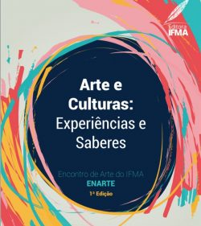

Campus Maracanã reúne gestores municipais para articular ampliação da EaD

Dezessete artigos artigos integram a coletânea “Arte e Culturas: Experiências e Saberes”, organizado pelas servidoras do Instituto Federal do Maranhão (IFMA), Mayara Anunciação, Monique Helen Lago, Dayse Araujo, Renata Trovão, Thais Brito e Ximena Maia.
....
Com selo da Editora IFMA, o ebook com 76 páginas reúne um resumo dos trabalhos artísticos-culturais científicos apresentados no Encontro de Arte do IFMA (ENARTE) dos anos de 2018 e 2019.
A obra aborda ações relativas a poesia, teatro, dança, graffiti, técnicas de corpo, música, afrofuturismo, fotonovela, dentre outros temas. Trata-se de um material literário que contribui para o enriquecimento do acervo literário e cultural nessa área para os estudantes, professores, pesquisadores e toda a comunidade.
“Para nós, é motivo de grande felicidade ver concretizado e materializado o no nosso tão almejado ebook”, celebrou a coordenadora de Arte, Cultura e Desporto da Pró-Reitoria de Ensino e Assuntos Estudantis (PRENAE), professora Mayara Anunciação.